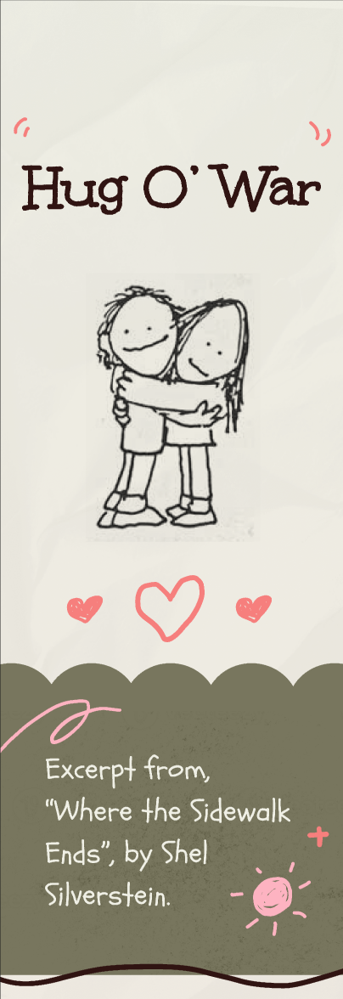
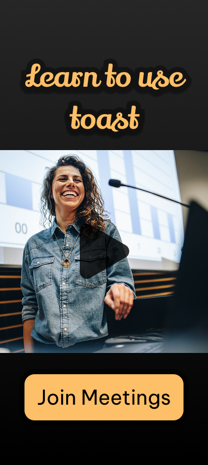
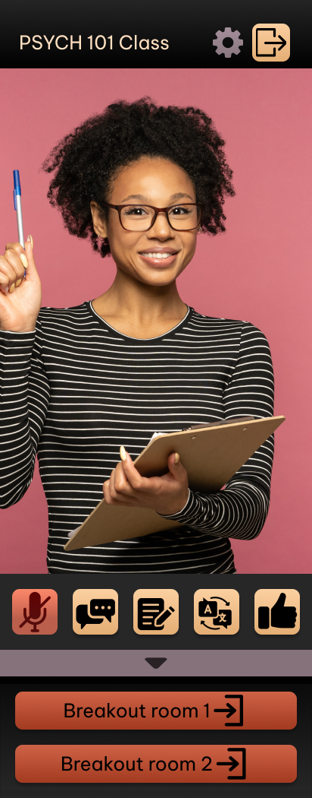
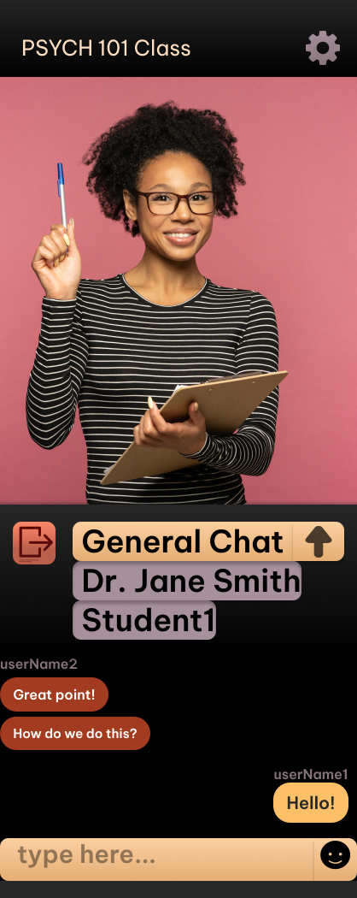
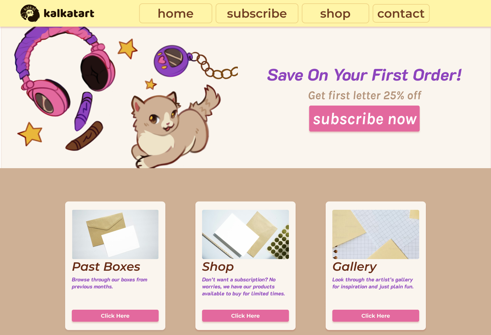
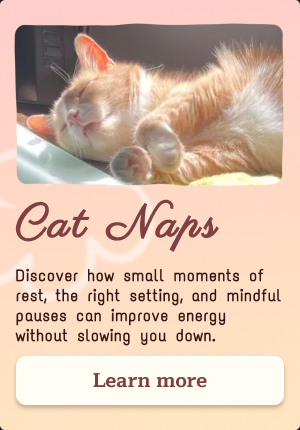

Narrative scrolling site created to highlight "Hug O' War", a poem by Shel Silverstein.Toast login page.Toast Onboarding Page.Toast's main user interface.Toast chat interface.Test webpage for kalkatart, my personal art business!First Figma project, card design for imaginary webpage about cats, featuring Bean.